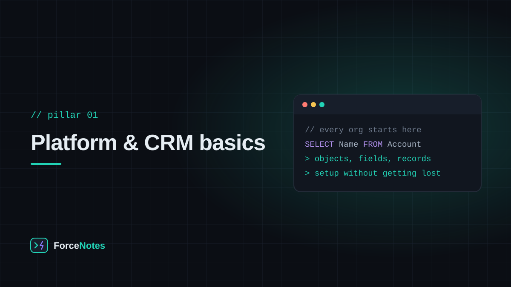

Before Objects and Fields mean anything, it helps to know what problem Salesforce is actually solving, how to find your way around an org, and how to see and move the data once it's there.

A CRM — customer relationship management system — exists to answer one question reliably: what is the current state of our relationship with this person or company? Before CRMs, that answer lived in spreadsheets, inboxes, and one salesperson's memory. Salesforce's job is to make that answer a shared, queryable, automatable piece of data instead of tribal knowledge.
Everything else in this blog — objects, security, automation, code — exists in service of keeping that one answer accurate and accessible to the right people.
An object is a table. A record is a row. A field is a column. Salesforce ships with standard objects that model the concepts almost every business shares — Account, Contact, Lead, Opportunity, Case — and lets you define custom objects for anything specific to your business, like Property__c for a real estate org or Shipment__c for logistics.
__c suffix in their API name, which is how you tell at a glance whether something was built-in or built by an admin.Fields are where the actual information lives, and choosing the right type matters more than it seems on day one — it constrains what automation and reports can do with that data later.
Lightning Experience separates what users see from what admins configure. Users work inside Apps — bundles of tabs and objects assembled with Lightning App Builder. Admins live in Setup, reached from the gear icon, where the Object Manager is the single most important screen: every object, field, page layout, and automation rule for that object is one click away from there.
A reliable habit for a beginner: whenever you're unsure how a field or automation works, go to Object Manager, find the object, and read its field list and its automation before touching anything.
A Report is a live, filterable view of your records — not a static export, but a query that re-runs every time it's opened. Reports come in three formats: Tabular (a flat list, good for exporting), Summary (grouped rows with subtotals, the one you'll use most), and Matrix (grouped by both rows and columns at once, like a pivot table). What a report can pull from is controlled by its Report Type — a pre-defined set of objects and the relationships between them, which is why a report sometimes can't show a field you expected: the report type it's built on doesn't reach that object.
A Dashboard is the visual layer on top of reports — charts, gauges, and tables, each component pointing at a source report. The one setting that trips people up: a dashboard component runs as a chosen user (either the dashboard viewer or a fixed "running user"), so two people can see different numbers on the same dashboard if their record access differs.
Getting data in and out of Salesforce cleanly is its own skill. For small, one-off imports, the built-in Data Import Wizard handles a few thousand records through a guided, point-and-click flow. For anything larger, more automatable, or non-standard-object, admins reach for Data Loader — a free desktop tool that reads a CSV and inserts, updates, upserts, or deletes records in bulk.